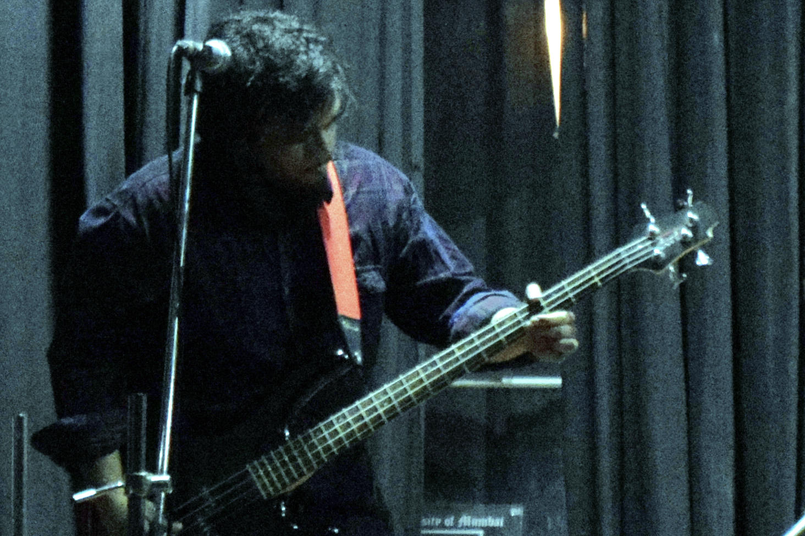
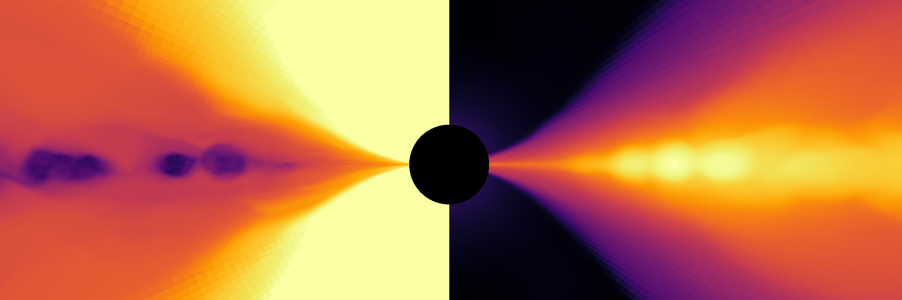
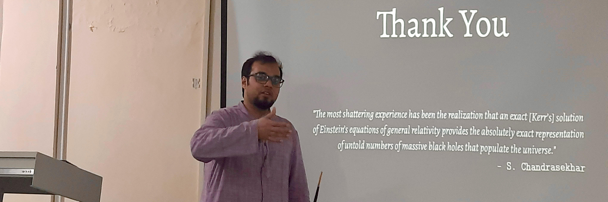

About Me

My name is Swarnim Shashank (स्वर्णिम् शशांक – which translates to golden moon so I also like to write it simply as 金月).
I hail from a small city in the gangetic plains of northern India, however I grew up in a small industrial town in the foothills of the Vindhya range.
I became interested in astronomy during my wonder years, through reading popsci and watching numerous documentaries, and then later developed
interest in coding in high school. This has now lead me to working in astrophysics research - where I study the
astrophysical systems using numerical simulations.
I am currently working on problems related to relativistic astrophysics in the strong gravity regime.
My works span both in X-ray and gravitational wave astrophysics.
I have varied interests and like discussing science, philosophy, music, movies, food and
FLOSS.
I play guitar, bass guitar and harmonium, and have a diploma in Hindustani classical music.

Research

Simulations of Accreting Black Holes
By numerically solving MHD equations coupled in a strong gravity backgroud,
I model the acretion process. These processes are the most efficient engines in the whole Universe and they can reveal a lot
of physics which is nearly impossible to study in the terrestrail laboratory.
Modelling of X-ray Emissions
Using a codes for ray-tracing and radiation transport, I model the X-ray emissions from accreting
systems. Using a suite of simulations I create data analysis models which could directly be used for observational data of X-ray missions.
Testing General Relativity
The theory of general relativity from Einstein presents the forefront in understand the nature
of gravity in the Universe. However, the theory still breaks at the centre of balck holes and the big bang creating singularities.
Using the data from X-ray and gravitational wave observatories, I test general relativity to look for any new physics. These observations
allow us to test the theory in a strong gravoty regime which in not possible on Earth.
Simulations of neutron stars
Using numerical relativity codes, I simulate single and binary neutron stars to their various properties.
Such as the emissions of gravitational waves, neutron star asteroseismoogy, equations of state and, the effects of magnetic fields.
Vitae

Employment:
- Postdoctoral fellow, Fudan University, Shanghai, China
Education:
- Ph.D. (Theoretical Physics), Fudan University, Shanghai, China
- Integrated M.Sc. (Physics), UM-DAE-CEBS, Mumbai, India
Research Interests: Relativistic Astrophysics, GRMHD, X-ray Astrophysics, Gravitational Wave Physics,
Numerical Relativity, Tests of General Relativity, Black Holes, Neutron stars, Machine Learning
Publications: InspireHEP,
arXiv,
ADS
Awards:
- 2024 – Shanghai Super Postdoctoral Fellowship, Shanghai Municipal Human Resources and Social Security Bureau.
- 2023 – Fudan Super Postdoctoral Fellowship, Fudan University.
- 2020–2023 – Ph.D. Scholarship, China Scholarship Council.
- 2015, 2016, 2017 – State Topper, National Graduate Physics Examination, IAPT.
- 2016 – Summer Research Fellowship, Indian Academy of Sciences.
- 2014–2019 – Inspire Scholarship, Department of Science and Technology, Government of India.
- 2011 – Senior Diploma, Hindustani classical music (Vocal), Prayag Sangeet Samiti.
Academic Visits:
- Sep, 2024 – University of Tokyo, Tokyo, Japan
- Apr, 2024 – IIT-K, Kanpur, India
- Jun, 2023 – SYSU, Zhuhai, China
- Jun–Jul, 2022 – IUCAA, Pune, India
- Feb–Jul, 2020 – IUCAA, Pune, India
- Jun–Nov, 2018 – Osaka University, Osaka, Japan
Presentations:
- Apr 2025 – Theory-agnostic tests of GR using X-rays and GWs; Mini-Workshop on Testing General Relativity with Black Holes, Fudan University, Shanghai, China (Talk)
- Dec 2024 – REFLUX: the first reflection model for super-Eddington sources; 5th China-India Workshop on High Energy Astrophysics, Fudan University, Shanghai, China (Talk)
- Nov 2024 – Harder Better Faster Stronger X-ray Reflection; Mini-Workshop on Machine Learning Techniques for Astrophysics, Fudan University, Shanghai, China (Talk)
- Nov 2024 – X-ray reflection spectroscopy of accreting black holes: Methodologies, Results, and Future Directions; Martes seminar, Nanjing University, Nanjing, China (Talk)
- Oct 2024 – X-ray reflection from slim accretion disks; Transient Phenomena and Physical Processes Around Supermassive Black Holes, TDLI, Shanghai, China (Talk)
- Sep 2024 – Recipe for X-ray Reflection Spectroscopy: How to make models to study BHs using X-rays?; Fudan-Tübingen-(and Friends) Workshop on the Relativistic and Exotic Universe, Fudan University, Shanghai, China (Talk)
- Sep 2024 – X-ray Reflection Spectroscopy for observing black holes: Methodologies, Results, and Future Directions; Department of Physics, University of Tokyo, Tokyo, Japan (Talk)
- May 2024 – X-ray reflection spectra from GRMHD simulated thin disks; High-energy Astrophysics/Compact Object Mini-Workshop, TDLI, Shanghai, China (Talk)
- Apr 2024 – Testing Kerr hypothesis with LVK BBH Inspirals; The 7th International Workshop on the TianQin Science Mission, CUHK, Hong Kong SAR (Poster)
- Apr 2024 – Testing General Relativity using X-ray Reflection Spectroscopy: Methodologies, Results, and Future Directions; SPASE department, IIT-K, Kanpur, India (Talk)
- Jun 2023 – Testing relativistic reflection models with GRMHD simulations of accreting black holes; Physics department annual meeting, Fudan University, Shanghai, China (Poster)
- Mar 2023 – Testing regularity of black holes with X-rays and GWs; 57th Rencontres de Moriond Gravitation session, La Thuile, Italy (Poster)
- Nov 2022 – GRMHD simulations to test reflection models based on thin Keplerian disks; 3rd China-India Workshop on High Energy Astrophysics, Fudan University, Shanghai, China (Talk)
- Jul 2022 – Testing the Kerr nature of black holes using X-rays and GWs; IUCAA, Pune, India (Talk)
- Nov 2018 – Simulations of magnetised neutron star mergers; OUTAP, Osaka University, Osaka, Japan (Talk)
Conferences/Workshops Organised:
- Apr 2025 – Mini-Workshop on Testing General Relativity with Black Holes, Fudan University, Shanghai, China (LOC)
- Nov 2024 – Mini-Workshop on Machine Learning Techniques for High Energy Astrophysics, Fudan University, Shanghai, China (Organiser)
- Apr 2023 – New Frontiers in GRMHD Simulations of Accreting Black Holes, Fudan University, Shanghai, China (Organiser)
- Nov 2018 – IAU Symposium 341: PanModel2018 – Challenges in Panchromatic Galaxy Modelling with Next Generation Facilities, Osaka University, Osaka, Japan (LOC student staff)
PDF
Pass: 93 + 103
Contact
Email: swarnim -at- fudan -dot- edu -dot- cn
Address: Physics research building, Fudan University Jiangwan Campus, 2005 Songhu road, Shanghai